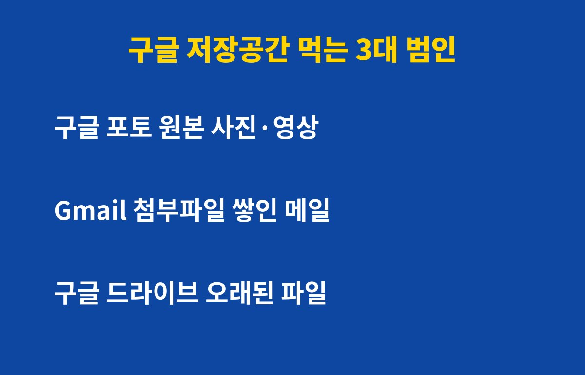
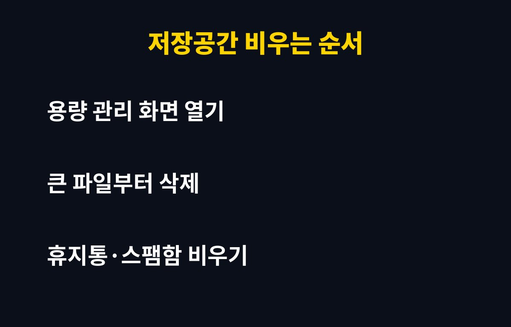

구글 저장공간은 무료로 15GB까지만 쓸 수 있고, 이게 꽉 차면 Gmail 메일 수신이 막힙니다.
구글 계정을 쓰는 분이라면 남의 일이 아닌데요, 그런데 용량이 꽉 찼다고 바로 결제할 필요는 없을 수 있어요. 이유는 아래에 있어요.
구글 저장공간 15GB, 어디까지 같이 쓰는 걸까요?
많은 분이 모르는 사실이 하나 있어요. 15GB는 Gmail 용량이 아니라 구글 포토, 구글 드라이브, Gmail을 전부 합친 용량이라는 점이에요. 사진을 많이 찍는 분은 포토에서 먼저 차고, 그 영향으로 메일까지 막히는 거예요.
용량이 가득 차면 새 메일을 받지 못하고, 새 사진 백업도 멈춰요. 보낸 사람에게는 메일이 반송되기도 하니, 인증 메일이나 중요한 연락을 놓칠 수 있어서 더 위험해요.

내 용량을 가장 많이 먹는 파일은 뭘까요?
대부분 범인은 정해져 있어요. 아래 표처럼 세 곳을 먼저 확인해 보세요.
| 위치 | 주로 차지하는 것 | 정리 방법 |
|---|
| 구글 포토 | 원본 화질 사진·긴 영상 | 큰 영상부터 삭제, 흐린 사진 정리 |
| Gmail | 첨부파일 있는 오래된 메일 | 첨부 있는 메일 검색 후 삭제 |
| 구글 드라이브 | 오래된 문서·백업 파일 | 용량 큰 순으로 정렬해 삭제 |
특히 영상 한두 개가 사진 수백 장보다 용량이 클 때가 많아요. 그래서 '큰 것부터' 지우는 게 가장 빠른 방법이에요.
결제 없이 용량을 확보하는 순서가 있다고요?
네, 있어요. 순서대로 해 보세요.
먼저 구글 계정의 저장용량 관리 화면을 열어 어디가 가장 큰지 확인해요. 그다음 큰 파일부터 삭제하고, 휴지통과 스팸함을 꼭 비워주세요. 휴지통에 있는 파일은 비우기 전까지 용량을 계속 차지해요.
Gmail에서는 '첨부파일 있음'으로 검색한 뒤 오래된 메일을 골라 지우면 효과가 커요. 광고성 프로모션 메일을 한꺼번에 정리하는 것도 좋은 방법이에요.

그래도 부족하다면 유료는 꼭 써야 할까요?
정리해도 계속 부족하다면 구글 원 같은 유료 용량을 고려할 수 있어요. 다만 요금과 용량 구성은 바뀔 수 있으니 결제 전 공식 화면에서 꼭 확인하세요.
중요한 건 용량이 꽉 차기 전에 미리 관리하는 거예요. 한 번 정리해 두면 몇 달은 여유가 생기고, 갑자기 인증 메일을 못 받는 일도 막을 수 있어요. 오래 방치된 계정은 정책에 따라 콘텐츠가 삭제될 수도 있으니, 오늘 한 번만 확인해 두세요.
도움이 되셨다면 구독해 두세요. 생활에 바로 쓰이는 IT 꿀팁을 계속 알려드릴게요.
기사·공식 발표 기준이며 출시·가격 정보는 바뀔 수 있어요.